|
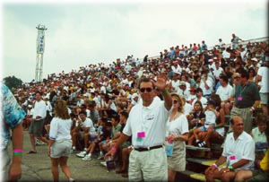 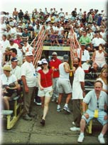 Waterworks Park crowd (Photos copyright 2000 Joe Dabliz)
We are especially looking for photos of raceboats owned by Horace Dodge, including Delphine, Excuse Me, and Miss Syndicate. Please note that all photographs are copyright by the individual photographer, and cannot be re-used or re-distributed without the photographer's permission. |
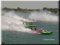 |
Robert Peters
Photos from a variety of areas |
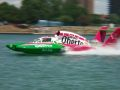 |
Dave Mabry
Photos from a rescue boat |
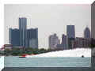 |
Bob Estabrook
Photos from a rescue boat |
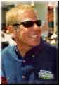 |
Brian Reed
Photos from the Dodge Pits |
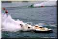 |
Robert Peters
Photos from a variety of areas |
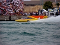 |
Bob Estabrook
Photos from a tow boat |
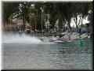 |
Patti Kennedy-Hayes
Photos from the Belle Isle pits |
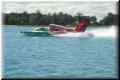 |
Dave Mabry
Photos from a rescue diver boat |
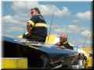 |
Brian Reed
Photos from the Dodge Pits |
|
Archived Gold Cup Video & Audio
By AllWebSports.com NOTE: These are no longer available. Sorry! |
|
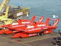 |
Dodge Pits On Wednesday
Radio-Control models (Friday) Misc: Internet crew, JSS, GP, Girls Photos by Jack Lowe |
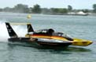 |
Photos by Robert Peters
Over 45 to see! |
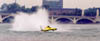 |
Photos by Mike Knoebel
A series of photos of boats flying high |

|
Photos by Bob Estabrook
Thanks Bob! |
|
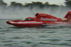 |
Photo by Dave Mabry
Miss Budweiser as taken from a rescue boat (Tango 4) |
|
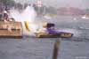 |
Appian Jeronimo pics by Paul T. White
Miss Appian Jeronimo passes close to the wall to avoid the stalled E-Lam. The preceding photo is E-Lam stopping and Bud going inside. |

|
Video frames by Brian Reed
As Miss Appian Jeronimo passes to the outside of Miss Elam Plus. |
|
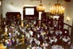 |
Hydrofest 2000
At the beautiful Detroit Yacht Club |
|
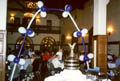 |
Volunteer Ball 2000
At the beautiful Detroit Yacht Club |
|
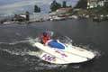 |
SODT President Tom McInnes
returns to the dock
after driving Tom D'eath's
"Miss Waa Waa too". Here's a photo of Tom
getting ready.
Photos taken at the Clayton (NY) Antique Raceboat weekend (Aug 00) by Nancy Spanich. |
|
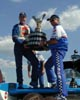 |
Still photos
By Robert F. Peters |
|
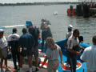 |
Lots more still photos
By Jim Stapleton |
|
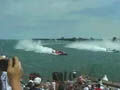 |
RealVideo clips
By Gene Casaroll |
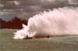 |
Miss PICO coming around a turn
Thanks to Rick Krause. |
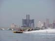 |
Miss Chrysler Jeep speeds by
Thanks to Bob Estabrook, skipper of a support boat. This photo from inside the Belle Isle Bridge turn. |
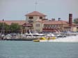 |
Miss Detroit Yacht Club
Thanks to Bob Estabrook. Passing the DYC, and preparing to enter the Roostertail turn. |
|
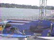 |
ThunderCam '99
As shut down at the end of the weekend. |
| 1999 photographers are:
Gene Casaroll, Jim Stapleton, Robert F. Peters, Dave Mabry, Larry Niemchak, Rick Krause and Bob Estabrook |
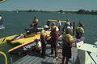 |
Initial pics as taken from the Dodge Pits |
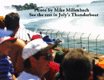 |
YIPES.
Talk about a Close Call..
Thanks to Mike Millenbach and Thunderboat Magazine for this pic. |
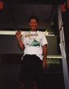 |
Some
would say UHRA drivers have lost all their marbles.
Here is one's proof that he has not. ;) |
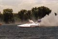 |
HAAA!
Just a little picture doctoring
A friend took this pic of his bro standing behind C-11 onshore. |
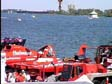 |
Thundercam
'98
As shut down at the end of the weekend |
| 1998 photographers are: Mike Millenbach, Brian Reed |
| 1997 photographers are: Joseph Pfeiffer, Robert F. Peters, Carl Adams, Ray Christensen and Brian Reed. |
| 1996 photographers are: Joseph Pfeiffer, Robert Lenich, David Frechette, Joseph Dabliz Sr., Carl Adams, Ray Christensen, Terry Constas, and Brian Reed. |
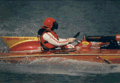 |
Vintage Race Boats |
|
All contents Copyright © 1995-2000 Spirit of Detroit
THUNDERFEST, except where noted.
Web page created by Brian Reed. |